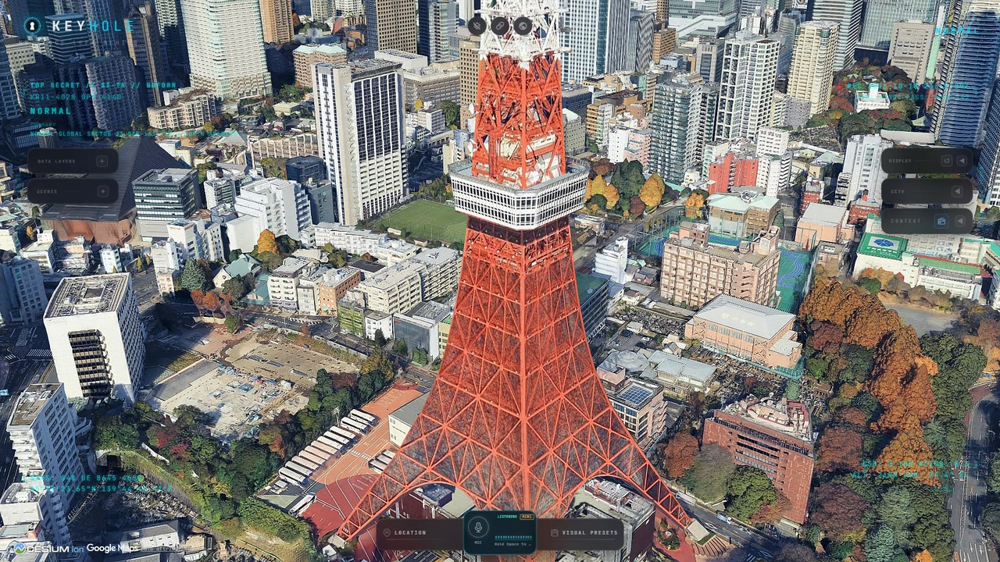
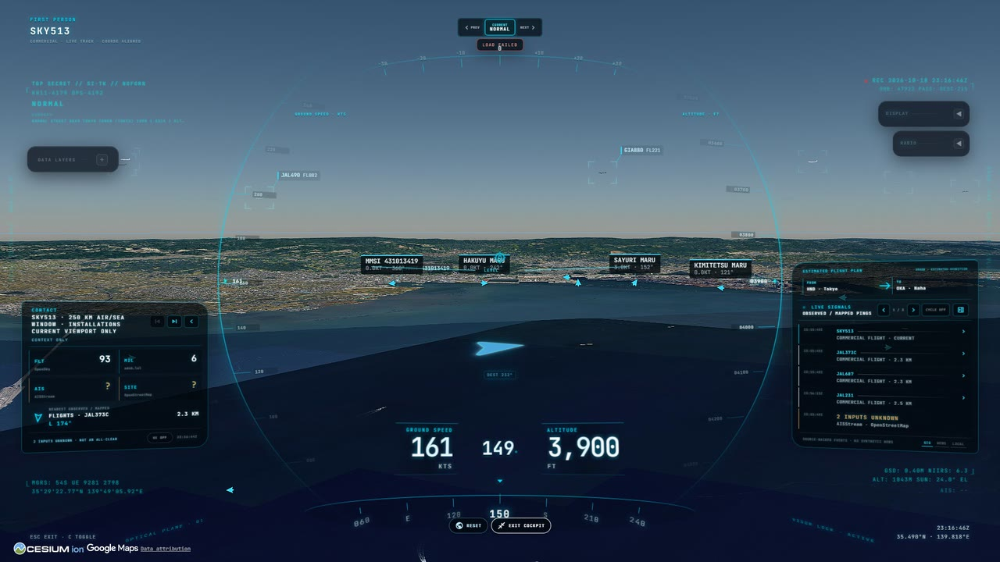
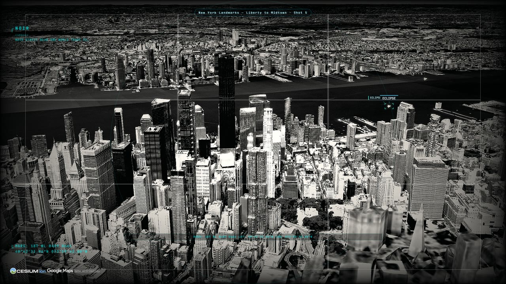
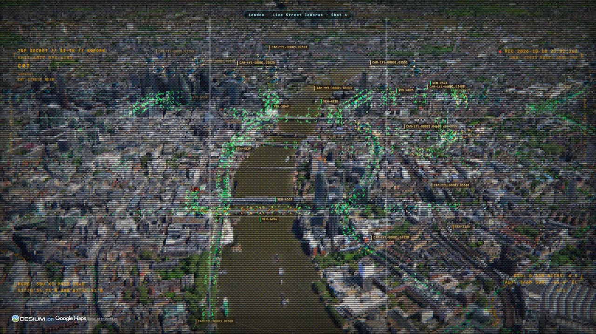
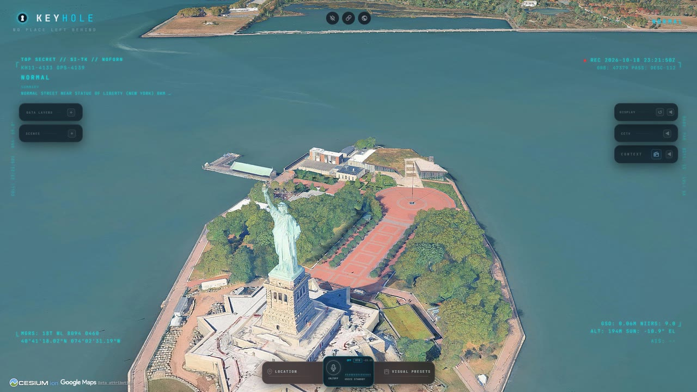
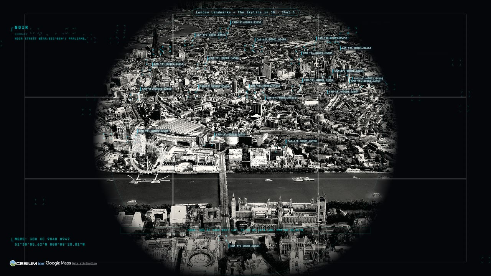

In development: v0.1.0
KEYHOLE
An open-source global surveillance dashboard, forked from Bilawal Sidhu's God's Eye View, gaining UFO and paranormal layers.
No public build: it runs on your machine with your own API keys. One Google Maps key gets you in; every other key is optional.
PROVENANCE // READ THIS FIRST
A fork of God's Eye View
Nearly everything you see on this page is the work of Bilawal Sidhu, who built God's Eye View and released it as open source under the MIT License in August 2026. KEYHOLE was imported from his upstream commit 880a672 (24 August 2026) with its full history, so git log and git blame still credit him for his code.
If you want God's Eye View itself, the latest features, or to contribute, go to the original repository (homepage maptheworld.ai). It is far more active than this fork. KEYHOLE is not affiliated with or endorsed by Bilawal Sidhu, and it has no connection to Palantir Technologies: the repository name is a joke about the kind of tool this is.
The whole planet, live, in a browser tab
A photorealistic 3D globe (CesiumJS on Google Photorealistic 3D Tiles) carrying the world's public signals: aircraft from ADS-B, ships from AIS, satellites propagated from current orbital elements, earthquakes, wildfires, street traffic, radio stations and public city cameras projected into the scene. Every layer keeps its source and freshness visible, and anything modeled rather than live is labelled as such.
Every clip below was captured from a local run of this repository, mostly by its own scripted scene tours. Nothing was composited in.
FEED 01 // REALTIME AGENT
Tell it where to look
An OpenAI Realtime agent drives the map through the same actions as the interface: camera moves, layers, sensor styles, tracking, annotations. You normally talk to it; here two lines were typed to it instead.
- > "Take me to Tokyo and orbit slowly." It flew from the globe to Tokyo Tower and started a slow orbit.
- > "Switch to night vision." It picked the thermal (FLIR) look instead. Honest footage.
FEED 02 // FIRST PERSON
Ride along with a live flight
Pick any tracked aircraft and enter its cockpit: ground speed, altitude and heading on a visor HUD, nearby flights and AIS ships labelled in the scene, and a contact panel counting what is around you.
Here: the nearest live flight to Haneda, climbing out over Tokyo Bay, then the same view through the thermal sensor.
FEED 03 // 3D TILES
Every city, in 3D
The planet is Google's photorealistic mesh, streamed live. KEYHOLE adds scripted landmark tours for London, New York, California and Ohio that fly the skyline with a single live layer on, so the mesh gets the frame rate.
This is the London Landmarks tour in the noir look, through the circular scope the project is named for.
FEED 04 // STREET LEVEL
Live streets
Traffic flow from TomTom (or a built-in simulation without a key), and public traffic cameras from Austin, Caltrans and Transport for London. London is the one network that publishes video, and KEYHOLE turns it on: TfL's rolling clip plays beside every still.
This is the London street cameras tour in the CRT look, with camera positions and congestion along the Thames.
FEED 05 // ORBITAL SHELL
Pull back to orbit
Satellites are propagated in the browser from CelesTrak's current orbital elements, every frame. Flights come from OpenSky, military aircraft from adsb.lol, quakes from USGS.
This is upstream's Omniscience Pullback tour: from Japan out to the globe with the satellite catalogue overhead.
Stills






ROADMAP // NOT BUILT YET
Next: the strange layers
The reason this fork exists is to bring the datasets from Strange Signals, my UAP correlation project (live map), onto this globe. None of these layers has landed yet. What is planned:
- UFO / UAP sightings: about 372,000 geocoded reports, from NUFORC through several cleaned datasets plus the Larry Hatch *U* historical catalogue.
- Paranormal hotspots: about 8,800 haunted places and 4,200 Bigfoot reports, with population-corrected scoring so dense cities do not win by default.
- Confounders: airports, military and DOE sites, restricted airspace, NASA fireballs, earthquakes and geomagnetic storms, the things a sighting should be checked against first.
- Correlation views: report density against those confounders, on the 3D globe instead of a flat map.
A cluster over a city is population bias. A cluster over empty terrain next to restricted airspace is worth a look. Layers model events, places and infrastructure, never named individuals.
What KEYHOLE has changed so far
On top of upstream, already on main:
- The KEYHOLE name, with every runtime string in one file that still credits God's Eye View.
- Draggable panels. Upstream's drag code was complete but no panel had a handle in the markup.
- Gemini for the HUD scene summary, with OpenAI as the fallback.
- Live London TfL camera video, and 13 scripted demo tours (landmarks, radio, California cameras and more).
- The voice agent can shed the heavy static layers when you say it is laggy.
- Readable Cesium ion 401/403 errors, LF line endings forced so the test suite passes on Windows, and an operator setup guide.
How it was made
Upstream
Vanilla JavaScript, CesiumJS and Vite, no front-end framework. Google Photorealistic 3D Tiles for the planet, the OpenAI Realtime API for voice. Keys for paid providers are brokered by the local dev server so they stay on your machine, and paid feeds sit behind cached, budget-governed proxies. The analyst that answers questions like "how many flights are over Texas" is local query code, not a language model.
This fork
The correlation layers will follow upstream's one-module-per-layer pattern, fed by the Strange Signals build scripts, so upstream changes can still be merged cleanly. Every new data source gets registered in both the data-sources file and the in-app attribution list.
These clips
Captured at 1920x1080 by a Playwright script against a local run: the page clock is paused and stepped 1/30 s per frame, so the globe streams its tiles between frames and nothing stutters. The tours are the repository's own scene recipes. The agent clip used two typed queries to the cheaper Realtime model: about two cents on the app's own cost meter.
Requirements: Node.js 24.14 or later in the 24 line (or 26), and a Google Maps API key with the Map Tiles API enabled; Geocoding, Places (New) and Street View Static light up search, nearby places and camera fallbacks. SETUP.md lists every optional key and what visibly breaks without it.
Credits and data sources
The code is MIT. The data is not: every source keeps its own licence and terms. Full breakdown in DATA_SOURCES.md.
| What | Who | Licence / terms |
|---|---|---|
| God's Eye View: all application code, design and documentation | Bilawal Sidhu | MIT |
| KEYHOLE changes | Stewart Gregerson | MIT |
| The clips and stills on this page | Captured by Stewart Gregerson from a local run | The map imagery and data shown in them stay under the providers' terms below |
| Photorealistic 3D Tiles, geocoding, places | Google Maps Platform | Google Maps Platform terms, your own key |
| CesiumJS; ion World Imagery and World Terrain | Cesium | Apache 2.0 (CesiumJS); Cesium ion terms |
| Live flights | OpenSky Network (Schäfer et al., "Bringing Up OpenSky", IPSN 2014) | Non-commercial research and education licence |
| Military flights, traces, flight fallback | adsb.lol contributors | ODbL 1.0 |
| Ships (AIS) | AISStream.io | Free beta, courtesy credit |
| Satellite orbital elements | CelesTrak (celestrak.org), Dr. T.S. Kelso | US-government-origin data, citation requested |
| Launches and missions | Launch Library 2, The Space Devs | The Space Devs terms of use |
| Earthquakes | U.S. Geological Survey | U.S. public domain |
| Active fires | NASA FIRMS, part of NASA's EOSDIS | CC0 / U.S. public domain, citation requested |
| Traffic flow | TomTom | TomTom developer terms, your own key |
| Roads, installations, place labels (Overpass, Nominatim) | © OpenStreetMap contributors | ODbL 1.0 |
| Cockpit weather | Open-Meteo.com | CC BY 4.0 |
| Cockpit headlines | Google News RSS; GDELT Project | Google News terms (personal, non-commercial); GDELT terms with citation |
| Austin cameras | City of Austin, data.austintexas.gov | City of Austin Open Data terms |
| California cameras | Caltrans, cwwp2.dot.ca.gov | Public Caltrans camera data, courtesy credit |
| London cameras (JamCams) | Powered by TfL Open Data. Contains OS data © Crown copyright and database rights | TfL Open Data terms, attribution required |
| Bikeshare | GBFS feeds (Lyft, BCycle) and each operator | Per feed, attribution |
| Radio station directory | Radio Browser | PDDL 1.0; broadcasters' own stream terms |
| Terrain and heights | Re:Earth Terrain / Mapterhorn; EGM2008 (NGA) | CC BY 4.0; public domain |
| Datacenters and dams (bundled) | © OpenStreetMap contributors, Open Infrastructure Map | ODbL 1.0 |
| Submarine cables (bundled) | © TeleGeography, submarinecablemap.com | CC BY-NC-SA 3.0, non-commercial only |
| Natural regions (bundled) | Made with Natural Earth | Public domain |
| San Francisco neighborhoods (bundled) | City and County of San Francisco, DataSF | PDDL 1.0 |
| 3D aircraft and other models | Individual authors | Per model, see public/models/README.md |
| Voice agent and HUD summaries (services, not data) | OpenAI Realtime API; Google Gemini | Provider terms, your own keys |
We acknowledge the use of data and imagery from NASA's Fire Information for Resource Management System (FIRMS), part of NASA's Earth Observing System Data and Information System (EOSDIS).